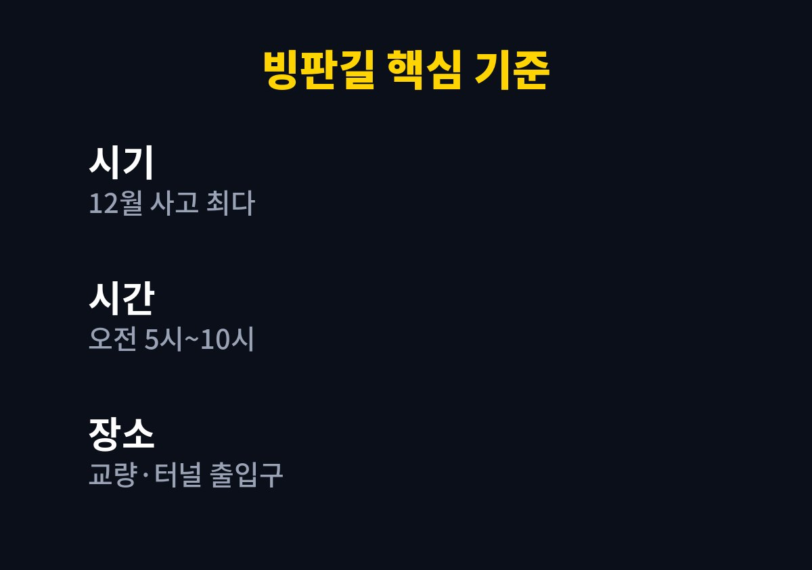
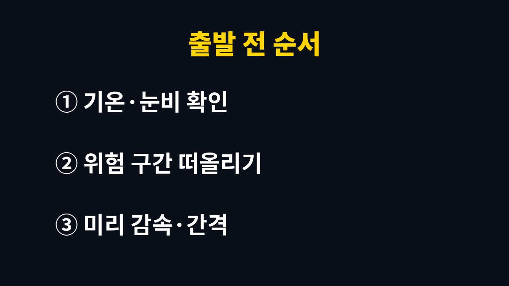

블랙아이스 운전 요령을 바로 따라 할 수 있게 핵심만 추려 본다. 겨울 새벽에 출근하거나 아이를 태우고 길을 나서야 하는 운전자에게 필요한 기준과 순서를 담았다.
2026년 11월 기준으로 도로교통공단 집계와 기상 관련 기관의 분석을 확인하고, 내가 직접 바꾼 운전 습관을 함께 정리했다.
나도 겨울 아침 다리 위에서 핸들이 가볍게 느껴진 뒤로 겨울 운전을 대하는 방식이 달라졌다.
블랙아이스는 도로 표면에 얇게 언 얼음이 아스팔트 색에 묻혀 잘 보이지 않는 현상이다.
눈이 쌓인 길은 누구나 조심하지만, 마른 길처럼 보이는 곳에서는 평소 속도 그대로 달리게 된다.
그래서 운전자가 위험을 알아차렸을 때는 이미 바퀴가 미끄러지고 있는 경우가 많다.
몇 해 전 겨울, 이른 아침에 쇼핑몰 택배 물량을 맡기러 나가던 길이었다.
다리 위로 올라서는 순간 핸들이 갑자기 가볍게 느껴졌다.
다행히 브레이크를 세게 밟지 않고 그대로 지나갔지만, 그날 이후로 겨울 새벽길을 전과 다르게 보게 되었다.
뒷자리에 아이들이 타는 날이 많다 보니 더 신경이 쓰였다.
도로교통공단 집계에 따르면 서리와 결빙으로 인한 교통사고는 12월이 약 40%로 가장 많았고, 2월과 1월, 11월이 뒤를 이었다.
사고가 난 시간대는 주로 오전 5시에서 10시 사이였다.
내가 새벽에 움직이는 시간과 정확히 겹친다는 것을 알고 나서 출발 시각부터 다시 생각하게 되었다.
국립기상과학원의 관측 분석에서는 교량과 터널 출입구, 계곡을 지나는 도로, 응달 지역에서 블랙아이스가 자주 생긴다고 설명한다.
저수지 근처나 고속도로 요금소, 나들목 부근도 함께 꼽혔다.
나는 내가 자주 다니는 길에서 이런 구간을 미리 머릿속에 표시해 두었다.
| 구분 | 확인한 내용 | 내가 바꾼 점 |
|---|---|---|
| 위험한 달 | 12월 약 40%로 최다(도로교통공단) | 12월부터 출발 시간 여유 두기 |
| 위험한 시간 | 주로 오전 5시~10시 | 급하지 않으면 해 뜬 뒤 출발 |
| 위험한 장소 | 교량·터널 출입구·응달·요금소 부근 | 진입 전 마른 길에서 감속 |

첫째로 다리나 터널 입구가 보이면 진입하기 전에 이미 속도를 줄여 둔다.
얼음 위에서 브레이크를 밟는 것보다 마른 길에서 미리 줄이는 편이 훨씬 안전하다고 판단했기 때문이다.
둘째로 앞차와의 간격을 평소보다 넉넉하게 벌려 둔다.
간격이 넓으면 급하게 제동할 일 자체가 줄어든다.
셋째로 핸들과 브레이크, 가속 페달은 모두 천천히 부드럽게 다룬다.
급하게 꺾거나 세게 밟는 동작이 미끄러짐을 키운다는 것을 몸으로 느꼈다.
넷째로 꼭 이른 시간에 나가야 하는 일이 아니면 해가 어느 정도 뜬 뒤로 출발 시각을 옮겼다.
쇼핑몰 출고 시간을 조금 조정했더니 마음도 한결 편해졌다.
이렇게 바꾼 뒤로는 겨울 아침에 핸들이 가볍게 느껴지는 순간을 다시 겪지 않았다.
도착 시간이 몇 분 늦어지는 대신 긴장이 덜해서 운전 뒤 피로도 줄었다.
아이들을 태운 날에도 예전처럼 손에 힘을 꽉 주고 운전하지 않게 되었다.
출발 전에는 기상 예보에서 기온과 비나 눈 소식을 먼저 확인한다.
전날 비나 눈이 왔고 밤사이 기온이 영하로 떨어졌다면 블랙아이스를 염두에 둔다.
차 유리와 사이드미러의 성에도 다 녹인 뒤에 출발한다.

블랙아이스는 눈에 잘 보이지 않기 때문에 미리 알고 대비하는 것 말고는 뾰족한 방법이 없다.
타이어 상태나 차량 장비는 차종마다 다르니 차량 설명서와 정비소 안내를 함께 확인하는 편이 좋다.
나는 올겨울에도 같은 순서를 지키며 운전할 생각이다.
다음 글에서는 겨울철 전기차 주행거리와 충전 습관을 정리할 예정이다.
※ 2026년 기준 공공기관 안내와 개인 경험을 바탕으로 정리한 글이며, 차종과 연식에 따라 기준이 다를 수 있어 차량 설명서와 공식 안내를 함께 확인하길 바란다.